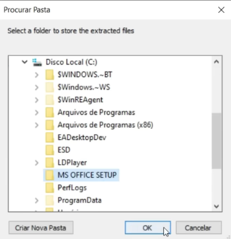
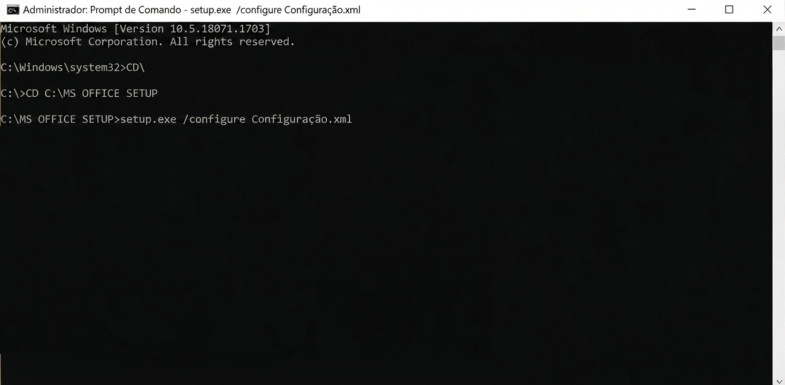

📥 1. Download dos arquivos
Baixe o pacote de instalação no link abaixo e extraia o conteúdo para C:\:
🌐 Alterando o idioma da instalação (OPCIONAL)
Caso deseje instalar o Office em outro idioma, edite o arquivo Configuração.xml antes de iniciar a instalação.
Localize a linha:
<Language ID="pt-br" />
Altere o valor do atributo ID para o idioma desejado.
⚙️ 2. Procedimento de instalação
Passo 1 – Preparação
Execute o arquivo officedeploymenttool_17328-20162.exe.
Quando o prompt for exibido, selecione a pasta onde os arquivos foram extraídos:

Passo 2 – Instalação via Terminal
Abra o Prompt de Comando (CMD) como Administrador e execute os comandos abaixo:
CD C:\MS OFFICE SETUPSetup.exe /configure Configuração.xml (na imagem está errado)

Importante: Após realizar a alteração, salve o arquivo Configuração.xml e execute novamente o comando de instalação.
📝 Observações
- Este repositório contém apenas os arquivos necessários para a instalação do Microsoft Office.
- O procedimento utiliza a Office Deployment Tool (ODT) oficial da Microsoft.
- A instalação não ativa o Office. Para utilizar o produto, é necessário possuir uma licença válida da Microsoft.
- Caso deseje instalar outra edição, arquitetura (32/64 bits) ou idioma, basta ajustar o arquivo Configuração.xml antes da instalação.